Flying with the Marin Aero Club
Here are some of the indoor models of the Marin Aero Club Flyers.
click any image for larger views and notes.
Also take a look at some pictures from our Contest Days.
| 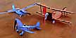 | 
| 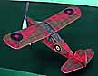 | 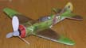 |
| a few by George Benson |
Baxter Pussycats |
John Carlson's Gloucester Auster |
Foam Lavochkin LA7 by Tom Whitworth |
| 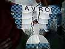 | 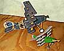 | 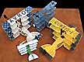 | 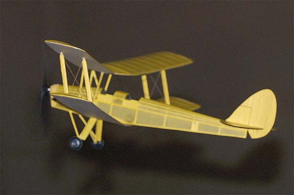 |
| George's "Avro" McGuire Quad |
2 planes 8 wings! |
4 planes 16 wings! |
Tom's Nolen Aero Tiger Moth |
| 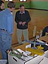 | 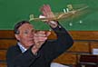 | 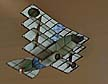 | 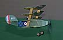 |
| George Benson winding ... |
... and launching his 1912 Drzewiecki-Canard |
George's Latest McGuire Quadruplane |
The new Quad gliding in. |
Outdoor Highlights |
Many of these images are of the same aircraft. I have grouped all the larger images of any model on the same page, along with the notes. Most of these groupings include additional images that are not thumbnailed here. If you see any mistakes in my notes, please let me know. | ||
|---|---|---|---|
| 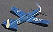 | 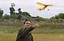 | 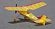 | |
| 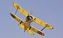 | 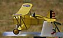 | 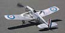 | 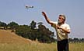 |
| 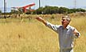 | 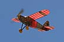 | ||
| 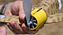 | ||
|---|---|---|
| 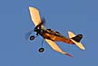 | 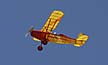 |
here are a few more pictures
return to
Marin Aero Club
FFML Gallery index |
Home Page
Copyright 1998-2002, Thayer Syme. All rights reserved